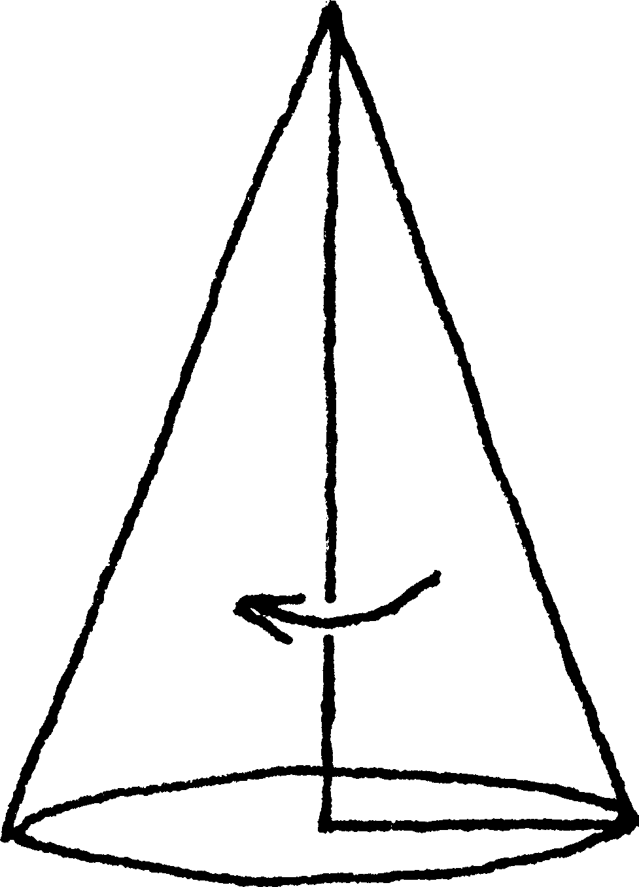
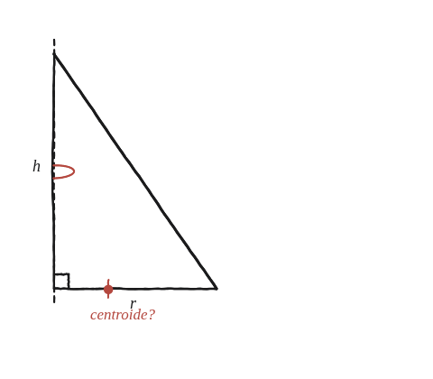

Si fem girar un triangle rectangle, forma un con. Suposant que Pappus té raó, on ha d'estar el centroide del triangle?

Què hem de produir
No el volum del con —ja el coneixem: (1/3)πr²h. Cal trobar la distància del centroide del triangle a l'eix de gir, que és el catet vertical del triangle rectangle.
Planteja l'equació amb Pappus, amb la distància com a incògnita
El triangle rectangle té catets r (horitzontal, perpendicular a l'eix) i h (vertical, sobre l'eix). La seva àrea és (1/2)rh. Pappus diu: volum = àrea × 2π × distància del centroide a l'eix. Ja es coneix el volum (el con). Què queda per aïllar?
La construcció

Tancar-ho
Igualant (1/2)rh × 2π × d amb (1/3)πr²h, i aïllant d: πrhd = (1/3)πr²h, així que d = r/3. El resultat diu a quina fracció de r (el catet horitzontal) ha d'estar el centroide, independentment de h.
El centroide d'un triangle rectangle és sempre a un terç de la distància horitzontal des de l'eix (el catet vertical), sigui quina sigui l'alçada h.
Comprovació
r=3, h=4: volum del con = (1/3)π(9)(4) = 12π. Àrea del triangle = (1/2)(3)(4) = 6. Pappus: 12π = 6×2π×d → d = 1. Fracció: d/r = 1/3.
Aquest 1/3 no és una coincidència del triangle rectangle: és el mateix fet, general per a qualsevol triangle, que el centroide —la mitjana dels tres vèrtexs— es troba a un terç de cada mediana comptant des del costat corresponent.